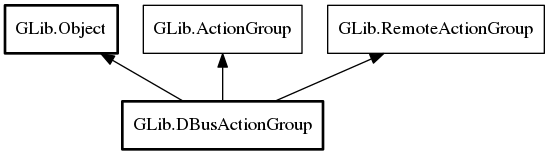

DBusActionGroup
Object Hierarchy:
Description:
DBusActionGroup is an implementation of the ActionGroup interface that can be used as a proxy for an action group that is exported over D-Bus with export_action_group.
Namespace: GLib
Package: gio-2.0
Content:
Static methods:
Creation methods:
Inherited Members:
All known members inherited from class GLib.Object

All known members inherited from interface GLib.ActionGroup
All known members inherited from interface GLib.RemoteActionGroup